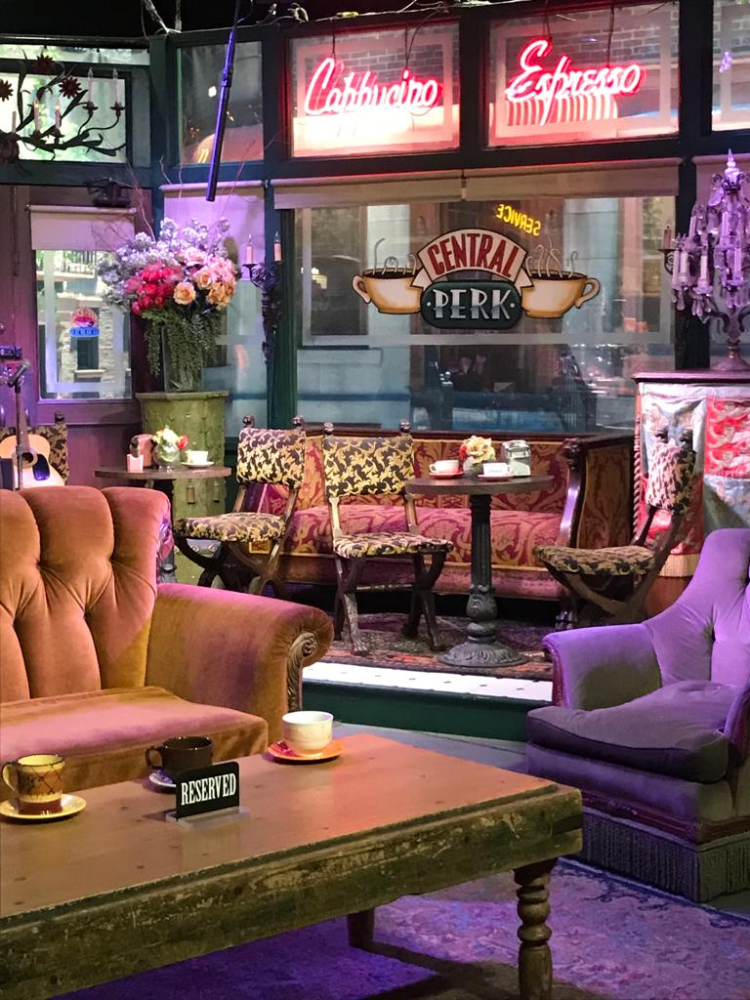
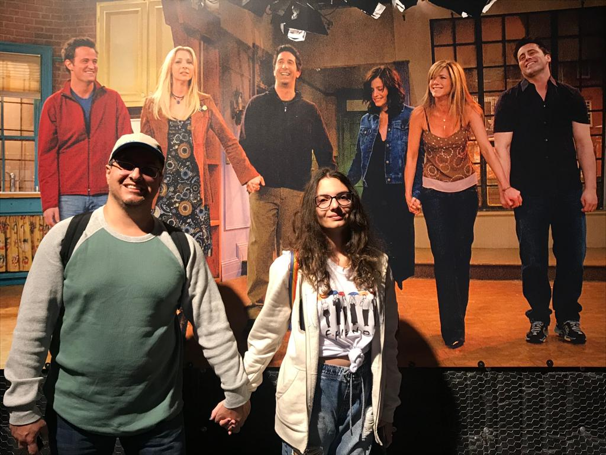
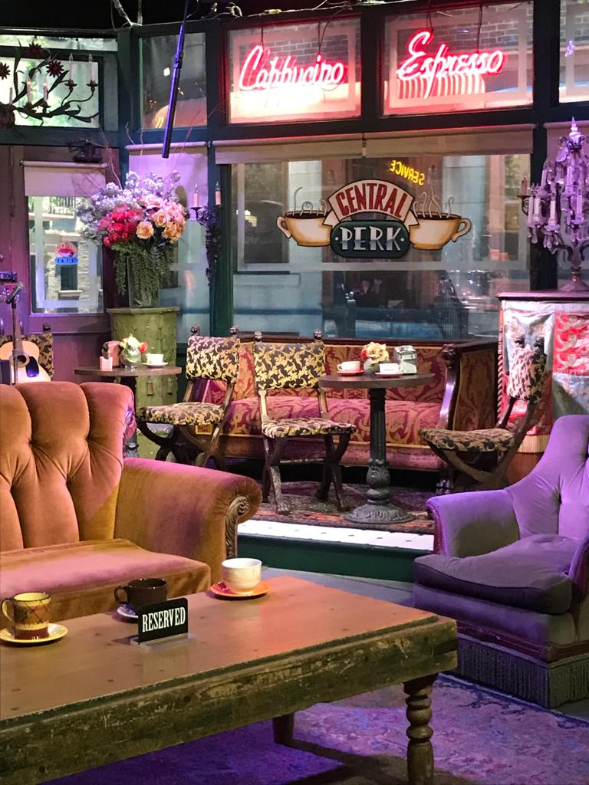
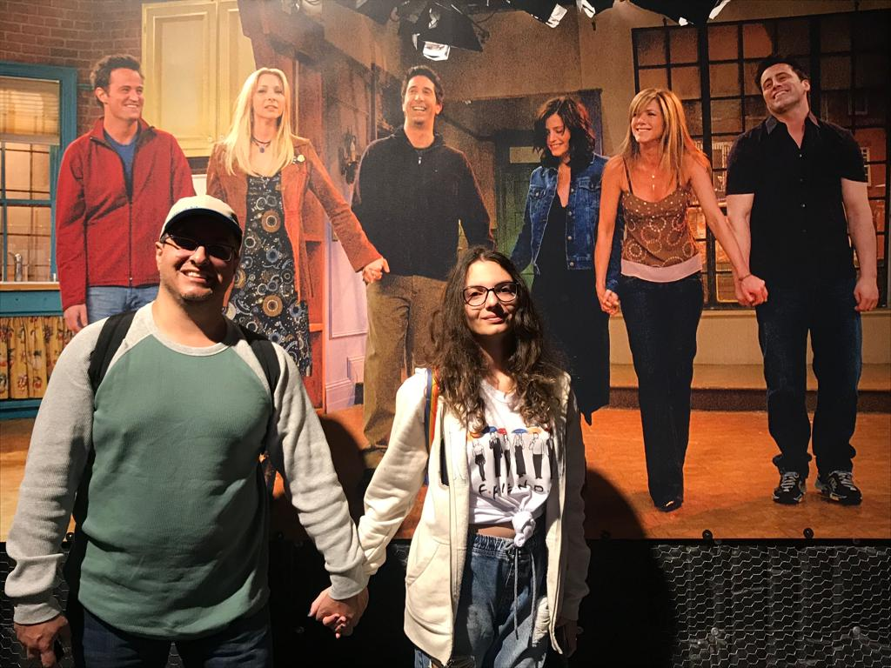
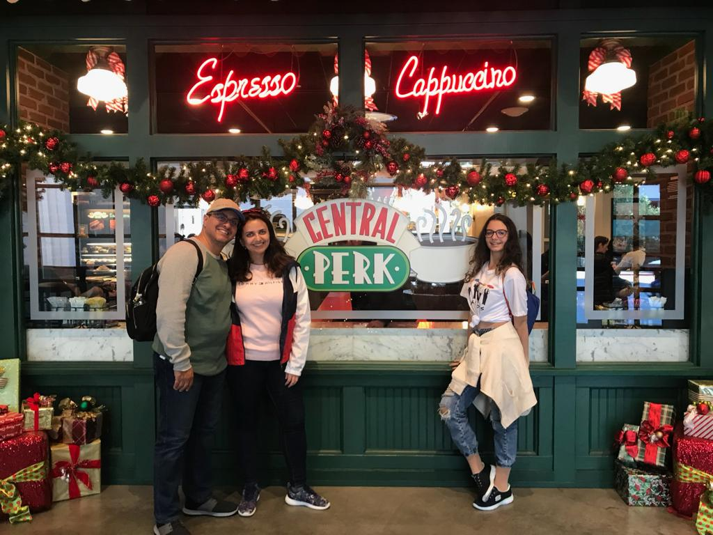
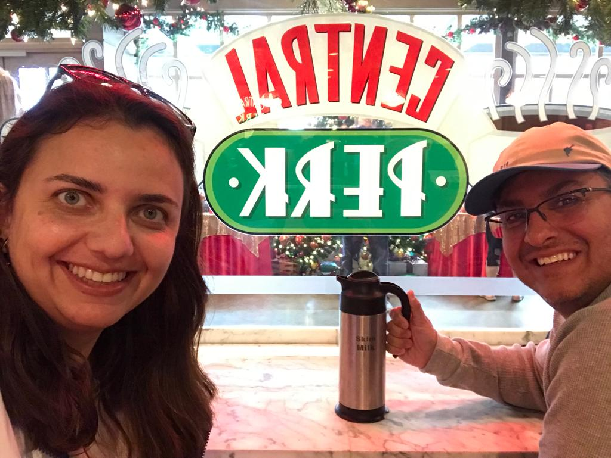
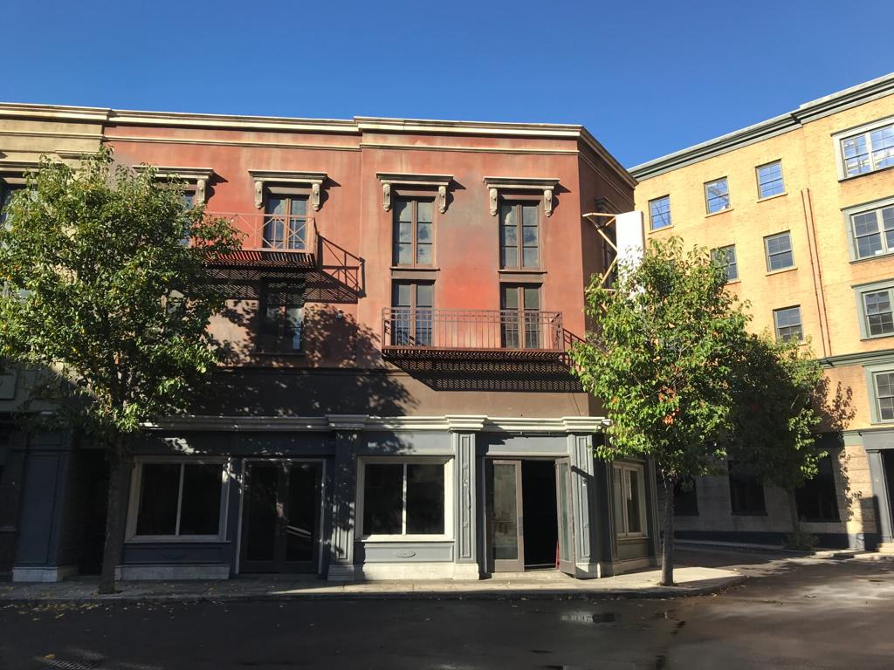
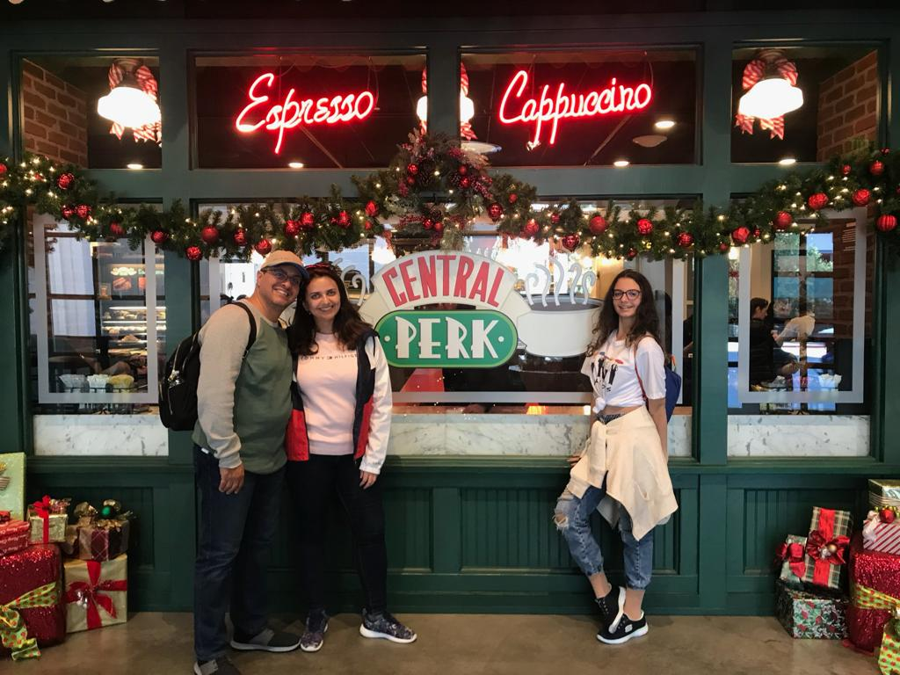
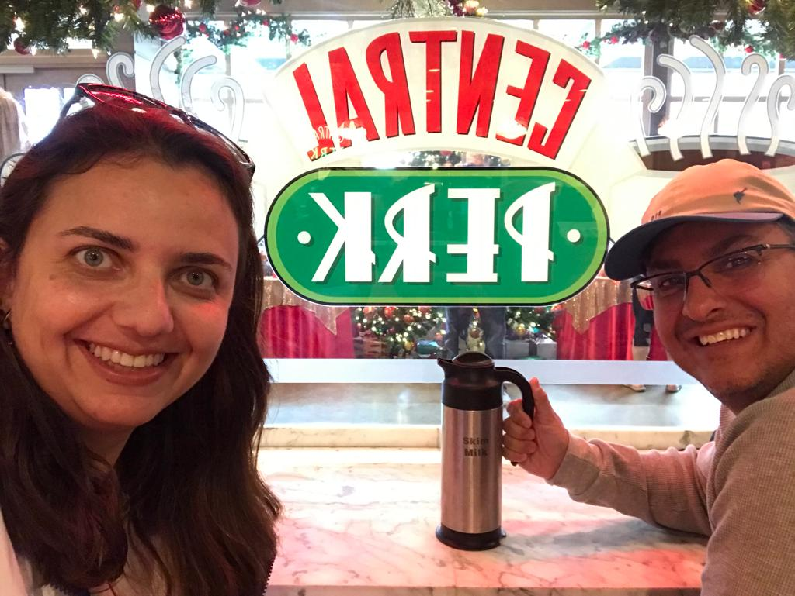
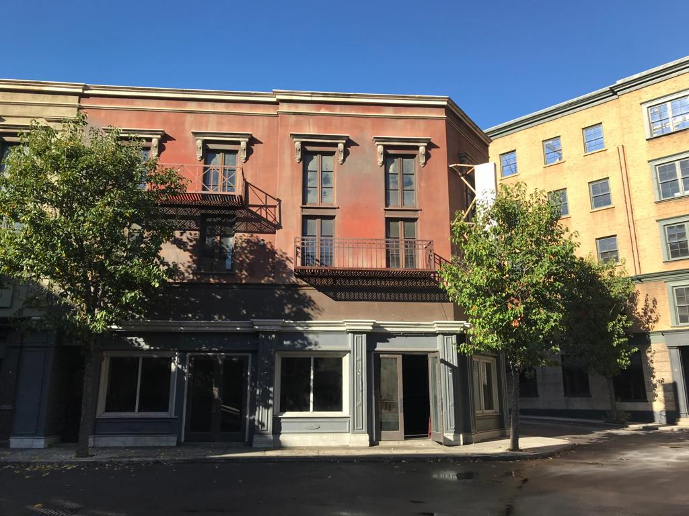

The Fountain Pulitzer
Acredito que nenhum ponto turístico de Nova York tenha tido mais destaque do que The Fountain Pulitzer, essa é a fonte que aparece na abertura da série, onde os amigos dançam e até mergulham. Apesar da série ter sido gravada em Los Angeles e os autores não terem feito nenhuma gravação em Nova York, a Warner recriou a fonte com no Studio com todos os detalhes da original.
Pulitzer Fountain é uma fonte ao ar livre localizada no Grand Army Plaza de Manhattan, em Nova York. A fonte tem o nome do editor de jornal Joseph Pulitzer, que morreu em 1911, tendo deixado US $ 50.000 para a criação da fonte. Pulitzer pretendia que sua fonte fosse "como as da Place de la Concorde, Paris, França".
A Fonte Pulitzer, em frente ao Grand Army Plaza, na 5ª Avenida, em Nova York, é muito bonita. Certamente vale uma parada para fotos ao caminhar na 5ª Avenida e até mesmo uma parada para um rápido lanche.
Informações para turistar!
Contatos:
Site: https://www.nycgovparks.org/parks/grand-army-plaza-m062/
Telefone: (212) 360-8163
Email: Envie-nos uma mensagem
Localização:
Endereço: 764 Central Park S
Cidade: New York, NY
Cep: 10019
Demais Informações:
Funcionamento: de segunda a segunda, 24 horas por dia
É permitido animais!
Faixa etária: Livre
Duração média de visita: 10 minutos
Fotos de fãs de Friends
Você é fã de Friends?
Visite os Studios da Warner em Los Angeles, mas isso é tema para um novo Post.

 



 




